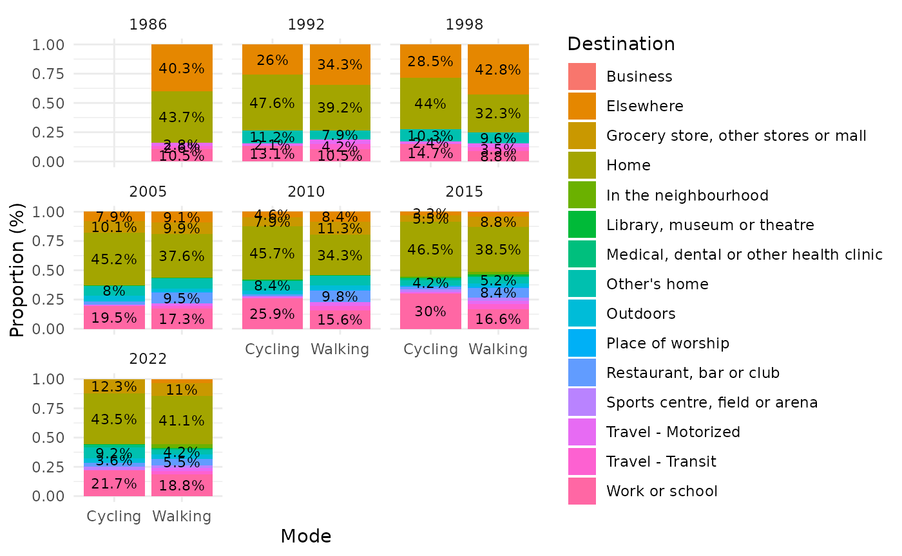
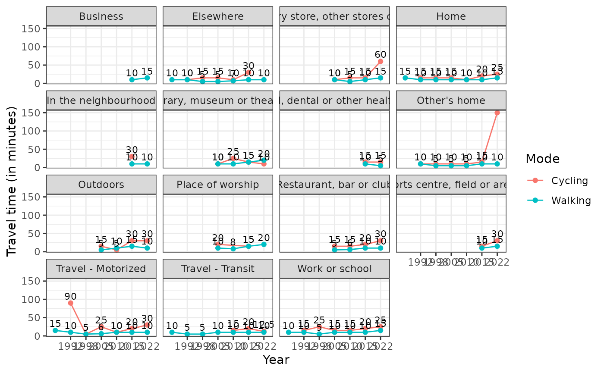
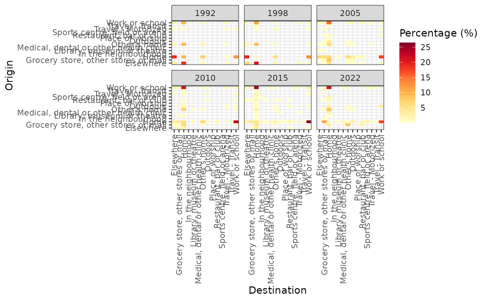

ActiveCA-Applications
ActiveCA-Applications.RmdThis vignette introduces some possible applications of ActiveCA datasets.
To start the demonstration, it is first necessary to install the package. The code chunk below demonstrates how to install the ActiveCA package in R:
if(!require("ActiveCA", character.only = TRUE)) {
remotes::install_github("dias-bruno/ActiveCA")
}
#> Loading required package: ActiveCAAfter installing the {ActiveCA} R package, you can load it using the following code:
The documentation of the package can be accessed by running
?ActiveCA in R. The documentation includes a
description of the package, information about the authors, contributors,
and maintainers, and an overview of all pre-processed data sets included
in the package.
The TUS surveys apply a probability sampling methodology, in which each episode or person selected in the sample represents several other episodes or persons not in the sample. The number of episodes and persons represented by a episode or person is determined by the weight or weighting factor. Because of this, estimates of the number of episodes or persons need to be calculated applying the corresponding weighting factors.
For instance, to calculate the percentage of respondents from the
2015 TUS GSS survey with active travel episodes, it is necessary to
account for the person’s weight. In 2015, the weight variable is
represented by WGHT_PER. The code below demonstrates how to
obtain the percentage of people with active travel episodes by age
group. It uses the dplyr package to manipulate the
data.
The process begins by creating a dataset that sums the population by
age group. Then, it joins the 2015 episodes with the 2015 Main File.
Note that in both operations, the code sums the person weight variable
(WGHT_PER) to obtain the correct population values. After
this, a new dataset, Active_percentage, is created by
merging both previous datasets. The percentage of active travel episodes
by age group is calculated by dividing the total population by the
population with active trip episodes, then multiplying by 100 and
rounding with 2 decimal places.
#>
#> Attaching package: 'dplyr'
#> The following objects are masked from 'package:stats':
#>
#> filter, lag
#> The following objects are masked from 'package:base':
#>
#> intersect, setdiff, setequal, union
#> # A tibble: 7 × 4
#> AGEGR10 Total_population Active_population Percentage
#> <ord> <dbl> <dbl> <dbl>
#> 1 15 to 24 years 4511131. 2083224. 46.2
#> 2 25 to 34 years 4956386. 1982204. 40.0
#> 3 35 to 44 years 4734506. 1099412. 23.2
#> 4 45 to 54 years 5136125. 1031387. 20.1
#> 5 55 to 64 years 4831306. 931296. 19.3
#> 6 65 to 74 years 3283969. 645176. 19.6
#> 7 75 years and over 2312976. 449919. 19.4The result shows that the age group with the highest share of active trips is those between 15 and 20 years old, with almost 37%, followed by those between 25 and 34 years old with around 33%. There is a significant drop in percentage for the following groups, with the percentage falling to between 15% and 18% for the remaining age groups.
Now, let’s load some other data sets to carry out more analysis:
data("gss_episodes")
data("gss_main_2022")
data("gss_main_2015")
data("gss_main_2010")
data("gss_main_2005")
data("gss_main_1998")
data("gss_main_1992")
data("gss_main_1986")The next chunk shows how to obtain the standard deviation, and minimum, maximum, median, and mean values for walking and cycling, by year:
# Calculate min, mean, and max statistic (duration)
stats_data <- gss_episodes |>
group_by(YEAR, MODE) |>
dplyr::summarise(
min = min(DURATION),
mean = sum(DURATION * WGHT_EPI)/sum(WGHT_EPI),
median = Hmisc::wtd.quantile(DURATION, weights = WGHT_EPI, probs = 0.5),
max = max(DURATION),
std = sd(DURATION),
.groups = "drop"
)
stats_data
#> # A tibble: 13 × 7
#> YEAR MODE min mean median max std
#> <dbl> <chr> <int> <dbl> <dbl> <int> <dbl>
#> 1 1986 Walking 1 21.5 10 660 31.4
#> 2 1992 Cycling 5 24.2 15 240 32.7
#> 3 1992 Walking 1 16.2 10 300 18.0
#> 4 1998 Cycling 2 21.2 15 90 17.5
#> 5 1998 Walking 1 11.2 5 285 13.4
#> 6 2005 Cycling 1 19.3 15 180 17.8
#> 7 2005 Walking 0 12.0 10 515 15.5
#> 8 2010 Cycling 1 18.9 10 270 26.2
#> 9 2010 Walking 0 12.6 10 480 16.6
#> 10 2015 Cycling 5 26.4 20 175 25.0
#> 11 2015 Walking 5 17.2 10 900 24.9
#> 12 2022 Cycling 5 39.2 30 150 20.2
#> 13 2022 Walking 5 18.3 15 480 23.0The following chunk shows the share of each destination in the total number of trips, by year and mode of transport:
library(ggplot2)
destination_percentual <- gss_episodes %>%
group_by(MODE, dest_label, YEAR) %>%
dplyr::summarise(n = sum(WGHT_EPI), .groups = "drop") %>%
group_by(MODE, YEAR) %>%
mutate(percentage = n / sum(n) * 100) %>%
ungroup() %>%
group_by(MODE, YEAR) %>%
mutate(rank = rank(-percentage, ties.method = "first")) %>%
mutate(label = ifelse(rank <= 5, paste0(round(percentage, 1), "%"), NA)) %>%
ggplot(aes(x = MODE, fill = dest_label, y = percentage)) +
geom_bar(stat = "identity", position = "fill") +
labs(y = "Proportion (%)",
x = "Mode",
fill = "Destination") +
theme_minimal() +
facet_wrap(~ as.factor(YEAR)) +
geom_text(aes(label = label),
position = position_fill(vjust = 0.5), size = 3)
destination_percentual
Displaying the evolution of the average duration by mode of transport for each destination:
library(tidyr)
destination_medians <- gss_episodes %>%
uncount(weights = round(WGHT_EPI)) %>%
group_by(YEAR, dest_label, MODE) %>%
summarise(median_duration = median(DURATION), .groups = "drop") %>%
ggplot(aes(x = as.factor(YEAR), y = median_duration, color = MODE, group = interaction(dest_label, MODE))) +
geom_line() +
geom_point() +
geom_text(aes(label = round(median_duration, 1)),
vjust = -0.5,
size = 3,
color = "black") +
theme_bw() +
facet_wrap(~dest_label) +
scale_x_discrete(
breaks = c(1992, 1998, 2005, 2010, 2015, 2022)) +
labs(
color = "Mode",
x = "Year",
y = "Travel time (in minutes)")
destination_medians
In conclusion, the next part presents how to obtain heat maps to show the percentage of each combination of origin and destination for Cycling mode:
cycling_hm_fig <- gss_episodes %>%
filter(MODE == 'Cycling') %>%
group_by(orig_label, dest_label, YEAR) %>%
dplyr::summarise(n = sum(WGHT_EPI),
.groups = "drop") %>%
group_by(YEAR) %>%
mutate(percentage = n / sum(n) * 100) %>%
ungroup() %>%
ggplot(aes(x = dest_label,
y = orig_label)) +
geom_tile(aes(fill = percentage)) +
labs(x = "Destination",
y = "Origin",
fill = "Percentage (%)") +
#geom_text(aes(label = round(percentage)), color = "black", size = 3) +
theme_bw() +
theme(axis.text.x = element_text(angle = 90, vjust = 0.5, hjust=1)) +
scale_fill_gradientn(colors = RColorBrewer::brewer.pal(9, "YlOrRd")) +
facet_wrap(~YEAR)
cycling_hm_fig